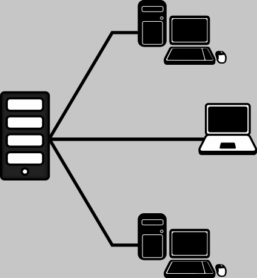

ITT-Netzwerke
Ein Netzwerk ist die Verbindung von mindestens zwei Computersystemen über ein geeignetes Medium.
Sind zwei Computer direkt miteinander verbunden spricht man von einem Peer-to-Peer-Netzwerk.

Dem gegenüber steht das Server-Client-Netzwerk bei dem mehrere Computer über einen zentralen Rechner miteinander verbunden sind.
Der Zweck eines Netzwerks ist:
Ein Medium dient dazu Signale von einem Computer zum anderen zu transportieren. Dabei unterscheidet man:
Alle Medien arbeiten *elektromagnetisch, nämlich mit Strom, Licht oder Funkwellen.
Ein Server ist ein zentraler Rechner in einem Netzwerk, der Dienste zur Verfügung stellt.
Clients sind Rechner, die mit einem oder mehreren Servern verbunden sind und diese Dienste nutzen, indem sie:
Ein Dienst ist eine Software, die:
Typische Beispiele sind:
Damit Daten in einem Netzwerk an ein bestimmtes Gerät zu senden, braucht dieses eine Adresse. In Netzwerken kommen mehrere Adressen zum Einsatz:
Schauen wir uns nun in der Praxis an, wie man unter Windows die MAC- und IP-Adresse des Rechners anzeigen lässt.
Öffne die Powershell (Windows-Taste + "Powershell").
Gib folgenden Befehl ein, um die MAC-Adressen deiner Netzwerkschnittstellen zu erhalten:
Get-NetAdapter
Die Ausgabe sieht in etwa so aus:
Name In~ ifIndex Status MacAddress LinkSpeed ---- --~ ------- ------ ---------- --------- LAN-Verbindung Pr~ 15 Disconnected 00-FF-BA-11-F7-59 1 Gbps Ethernet 3 Vi~ 6 Up 0A-00-27-00-00-06 1 Gbps vEthernet (WSL) Hy~ 50 Up 00-15-5D-55-78-9A 10 Gbps vEthernet (Default Swi... Hy~ 42 Up 00-15-5D-FF-CE-54 10 Gbps Ethernet Re~ 4 Up 00-D8-61-A4-4F-C2 1 Gbps
Die IP-Adresse lässt sich auf zweierlei Weise anzeigen. Zunächst über ein alter Windows CMD-Programm:
ipconfig.exe
Die Ausgabe beginnt in etwa so (die Ausgabe für weitere Netzwerkschnittstellen folgt):
Windows-IP-Konfiguration Ethernet-Adapter Ethernet: Verbindungsspezifisches DNS-Suffix: Verbindungslokale IPv6-Adresse . : fe80::d912:2ed1:fc47:4a77%4 IPv4-Adresse . . . . . . . . . . : 192.168.24.81 Subnetzmaske . . . . . . . . . . : 255.255.255.0 Standardgateway . . . . . . . . . : 192.168.24.1
Die zweite Möglichkeit ist ein Powershell-Cmdlet:
Get-NetIPAddress | Format-Table
Ausgabe:
ifIndex IPAddress PrefixLength PrefixOrigin SuffixOrigin~ ------- --------- ------------ ------------ ------------ ~ 6 fe80::33c2:8617:cd50:f18d%6 64 WellKnown Link ~ 50 fe80::fcfb:cbf4:a3ec:4a3c%50 64 WellKnown Link ~ 42 fe80::2443:9cd4:c6a4:bb13%42 64 WellKnown Link ~ 4 fe80::d912:2ed1:fc47:4a77%4 64 WellKnown Link ~ 15 fe80::a016:6571:9058:35a2%15 64 WellKnown Link ~ 1 ::1 128 WellKnown WellKnown ~ 6 192.168.137.1 24 Manual Manual ~ 50 192.168.240.1 20 Manual Manual ~ 42 172.31.48.1 20 Manual Manual ~ 4 192.168.24.81 24 Manual Manual ~ 15 169.254.182.216 16 WellKnown Link ~ 1 127.0.0.1 8 WellKnown WellKnown ~
Für die Namensauflösung einer URL- in eine IP-Adresse gibt es drei Optionen:
nslookup.exe IBB.com
Ausgabe:
Server: sebastian-Tuxedo Address: 192.168.24.1 Nicht autorisierende Antwort: Name: IBB.com Address: 136.243.235.86
Resolve-DnsName IBB.com
Ausgabe:
Name Type TTL Section IPAddress ---- ---- --- ------- --------- IBB.com A 2446 Answer 136.243.235.86
Get-IPAddressInformation IBB.com
Ausgabe:
status : success country : Germany countryCode : DE region : SN regionName : Saxony city : Falkenstein zip : 08223 lat : 50,475 lon : 12,365 timezone : Europe/Berlin isp : Hetzner Online GmbH org : JAR Media GmbH as : AS24940 Hetzner Online GmbH query : 136.243.235.86
Eine Netzwerkschnittstelle ist
ein Loopbackdevice das Netzwerkdienste lokal auf dem eigenen Computer bereitstellt.
Um nur die physischen Netzwerkschnittstellen anzuzeigen, dient folgender Befehl:
Get-NetAdapter -Physical
Ausgabe:
Name InterfaceDescription~ ifIndex Status MacAddress LinkSpeed ---- --------------------~ ------- ------ ---------- --------- Ethernet Realtek PCIe GbE Fam~ 4 Up 00-D8-61-A4-4F-C2 1 Gbps
Um alle - auch versteckten virtuelle Netzwerkschnittstellen anzuzeigen, dient der folgende:
Get-NetAdapter -IncludeHidden
Ausgabe:
Name ~ InterfaceDescription ifIndex Status ~ MacAddress LinkSpeed ---- ~ --------------------~ ------- ------ ~ ---------- --------- LAN-Verbind~ WAN Miniport (IP) ~ 18 Up ~ 0 bps LAN-Verbind~ WAN Miniport (SSTP) ~ 17 Discone~d 0 bps LAN-Verbind~ Private Internet Acc~r 15 Discone~d 00-FF-BA-11-F7-59 1 Gbps LAN-Verbind~ WAN Miniport (Networ~ 13 Up ~ 0 bps ~~~~~~~~~~~~~~~~~~~~~~~~~~~~~~~~~~~~~~~~~~~~~~~~~~~~~~~~~~~~~~~~~~~~~~~~~~~~~~~~~~~ ~~~~~~~~~~~~~~~~~~~~~~~~~~~~~~~~~~~~~~~~~~~~~~~~~~~~~~~~~~~~~~~~~~~~~~~~~~~~~~~~~~~ Ethernet ~ Realtek PCIe GbE Fam~ 4 Up ~ 00-D8-61-A4-4F-C2 1 Gbps 6to4 Adapte~ ~ 3 Not Prt~ 0 bps LAN-Verbind~ WAN Miniport (PPPOE)~ 2 Discone~d 0 bps
Auf einem Computer laufen in der Regel mehrere Dienste wie NetBios, SSH oder RDP, die über das Netzwerk kommunizieren.
Außerdem laufen Programme, die mit verschiedenen Servern wie Webserver, E-Mailserver, etc. kommunizieren
Um Datenpakete einzelnen Diensten und Clientanwendungen zuzuordnen werden sogenannte Ports genutzt. Das sind Nummern zwischen 1 und 216 die mit jedem Datenpaket übertragen werden.
Öffne die Powershell (Windows-Taste + "Powershell"). Mit folgendem Befehl kann du die Ports anzeigen, auf denen Dein Computer im Netzwerk "lauscht".
Get-NetTCPConnection -State Listen -LocalAddress 0.0.0.0
Ausgabe
LocalAddress LocalPort RemoteAddress RemotePort State ~ OwningProcess ------------ --------- ------------- ---------- ----- ~ ------------- 0.0.0.0 61654 0.0.0.0 0 Listen ~ 956 0.0.0.0 61651 0.0.0.0 0 Listen ~ 3964 0.0.0.0 54950 0.0.0.0 0 Listen ~ 4572 0.0.0.0 49668 0.0.0.0 0 Listen ~ 2580 0.0.0.0 49667 0.0.0.0 0 Listen ~ 1596 0.0.0.0 49666 0.0.0.0 0 Listen ~ 1496 0.0.0.0 49665 0.0.0.0 0 Listen ~ 816 0.0.0.0 49664 0.0.0.0 0 Listen ~ 984 0.0.0.0 17500 0.0.0.0 0 Listen ~ 1268 0.0.0.0 5040 0.0.0.0 0 Listen ~ 3656 0.0.0.0 3389 0.0.0.0 0 Listen ~ 1252 0.0.0.0 2179 0.0.0.0 0 Listen ~ 2384 0.0.0.0 135 0.0.0.0 0 Listen ~ 1044 0.0.0.0 22 0.0.0.0 0 Listen ~ 4464
Netzwerkprotokolle sind Regeln und Formate, die bestimmen, wie in Computer in Netzwerken kommunizieren.
Es gibt Protokolle, die beschreiben z. B.:
Die Bandbreite sagt aus, wie viele Datenbits über eine Netzwerkverbindung in einer Sekunde übertragen werden kann.
In Netzwerken sind Kilo- Mega- oder Gigabit pro Sekunde als Einheiten üblich.
Die Übertragung von Daten über ein Netzwerk braucht Zeit. Diese Zeit nennt man Latenz und sie wird in Millisekunden (ms) gemessen.
Sie kann mit dem ping-Befehl ermittelt werden:
ping IBB.com
Ping wird ausgeführt für IBB.com [136.243.235.86] mit 32 Bytes Daten:
Antwort von 136.243.235.86: Bytes=32 Zeit=41ms TTL=49
Antwort von 136.243.235.86: Bytes=32 Zeit=44ms TTL=49
Antwort von 136.243.235.86: Bytes=32 Zeit=41ms TTL=49
Antwort von 136.243.235.86: Bytes=32 Zeit=38ms TTL=49
Ping-Statistik für 136.243.235.86:
Pakete: Gesendet = 4, Empfangen = 4, Verloren = 0
(0% Verlust),
Ca. Zeitangaben in Millisek.:
Minimum = 38ms, Maximum = 44ms, Mittelwert = 41ms